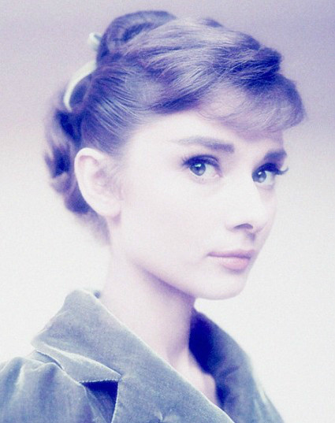

【90后的春天已经来临】 在互联网和移动互联网时代大佬们为什么极度看好和投资90后创业者，90后作为与生俱来的互联网新一代人又饱受争议，命运都掌握在我们自己手中，怎么走，怎么度过你的青春，你决定 ！ 但是互联网大佬们都看好新一代人，你敢做 我就敢投 要的就是这种 敢拼，敢干，敢闯 不怕死的魄力，太需要了 有多少人没有 ！！！ 值得我们每一位年轻人思考，我们是不是该做点什么 ？
【扎克伯格获得成就的6大要素】
野心：功成名就人士的基石是野心或是对个人成就的渴望 ;
远见：个人魅力取决于个人的远见 ，它让你说服其他人认同你的远见；
执行力：保持专注,不断实现；
决心： 驱动力 , 韧性或毅力是其展现的最大变量；
运气：创造你自己的运气；
时机：一路“管理着时钟”

若要有优美的嘴唇，要讲亲切的话，若要有可爱的眼睛，要看到别人的长处，若要有苗条的身材，把你的食物分给饥饿的人，若要有美丽的头发，让孩子一天抚摸一次，若要有优雅的姿态，走路请记住行人不止你一个。
━━━ 奥黛丽赫本